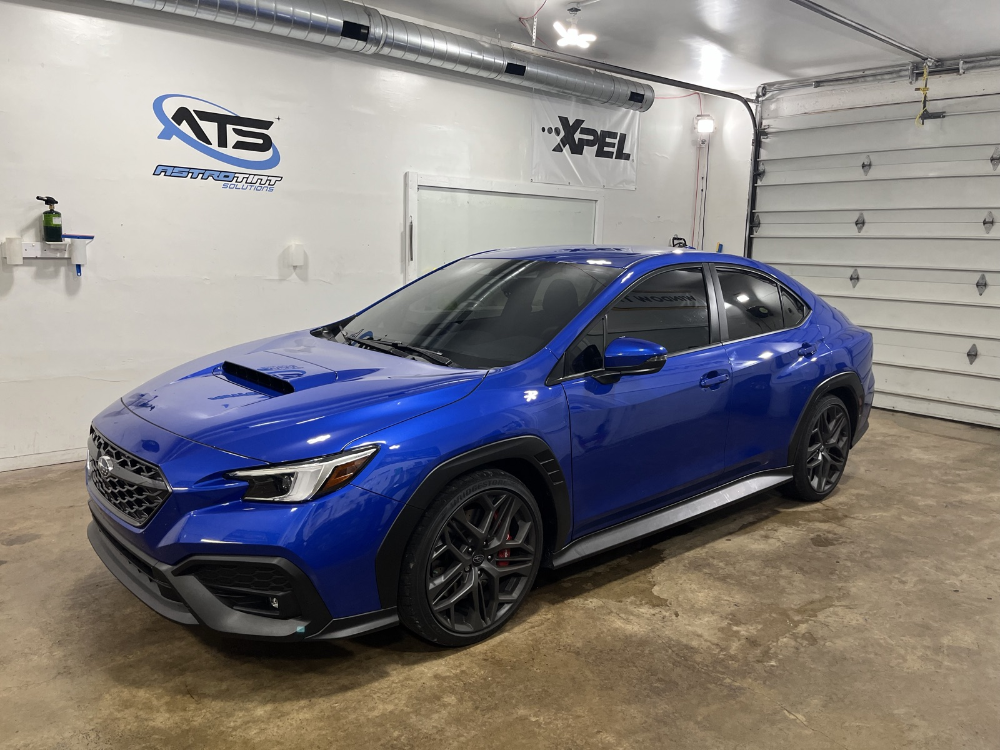
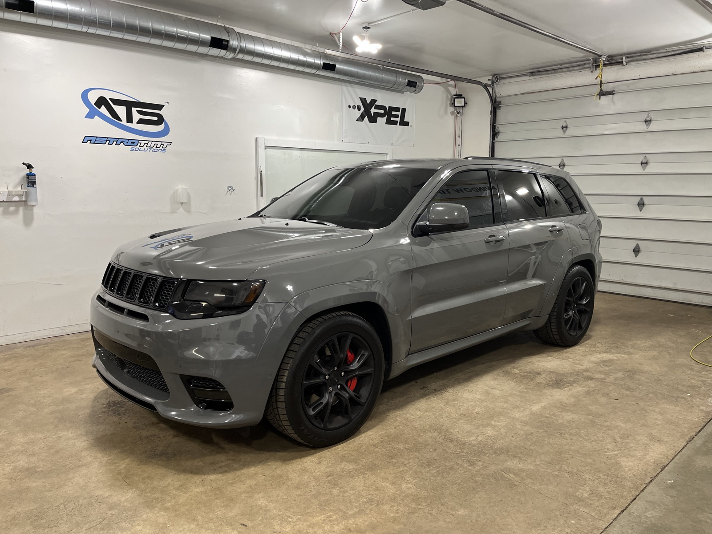

Beat the heat & glare
Ceramic film rejects a big share of the sun's infrared heat and over 99% of UV, so your cabin stays cooler, your A/C works less, and your dash doesn't fade or crack.
Automotive · Ceramic & carbon film
Premium ceramic and carbon tint for cars, trucks and SUVs — cutting heat, glare and 99%+ of UV, hand-cut to your exact glass and installed to Illinois law. Backed by a lifetime warranty.
From $179 · Lifetime warranty · Most cars done in 2–4 hours

Why ceramic car tint
Premium automotive film does three jobs at once. Here's what you'll actually notice on the drive home.
Ceramic film rejects a big share of the sun's infrared heat and over 99% of UV, so your cabin stays cooler, your A/C works less, and your dash doesn't fade or crack.
Keep wandering eyes off your belongings and give your vehicle a sharp, factory-finished look — with color-stable film that won't turn purple or bubble.
We install to Illinois tint law and back every job with a lifetime warranty against peeling, cracking and fade. Clean edges, no shortcuts.

What's included
Car tint FAQ
Most car tint jobs start around $179, and a full-vehicle premium ceramic package starts around $349. The exact price depends on your vehicle and the film you choose. Every quote is free and no-pressure.
In Illinois, front side windows must let more than 35% of light through, and the windshield may have a non-reflective strip along the top. Back and rear windows can go darker. We install to Illinois law and recommend the darkest legal shade for your goals.
Most full-car tints take 2 to 4 hours. We'll give you an exact timeline when you book, including same-day options when available.
Yes. Our ceramic film rejects a large share of the sun's infrared heat and over 99% of UV, so your car stays cooler and your interior is protected from fading — without a dark, mirrored look.
Ready when you are
No-pressure pricing, usually the same day. Call now or request your quote online.